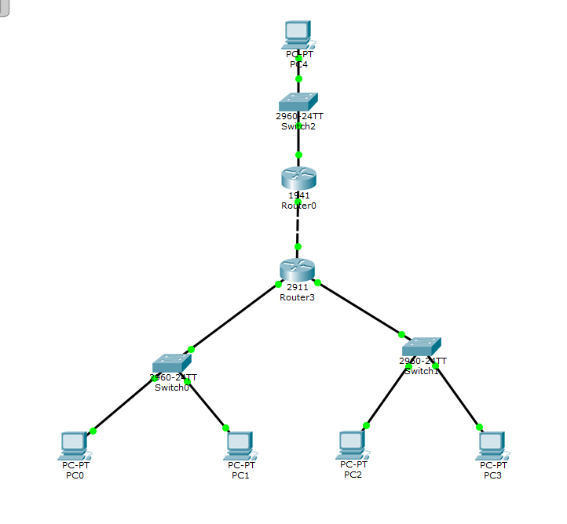
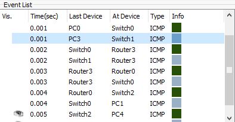

| Название тега: | Использование: |
|---|---|
| a | Создаёт гипертекстовые ссылки. |
| button | Создает интерактивную кнопку. Внутрь тега можно поместить содержимое — текст или изображение. |
| !DOCTYPE | Объявляет тип документа и предоставляет основную информацию для браузера — его язык и версия. |
| span | Контейнер для строчных элементов. Можно использовать для форматирования отрывков текста, например, выделения цветом отдельных слов. |
| img | Встраивает изображения в HTML-документ с помощью атрибута src, значением которого является адрес встраиваемого изображения. |
| ol | Упорядоченный нумерованный список. Нумерация может быть числовая или алфавитная. |
| Название команды: | Правоведение. |
|---|---|
| В составе команды выполнял роль: | Генератор идей. |
| Командный проект: | Командный проект "Супер Бложик Уникальности" |
| В симуляторе Cisco Packet Tracer на рабочем столе было размещено 5 компьютеров, 3 коммутатора и 2 маршрутизатора. |  |
|---|---|
| Всё оборудование было соеденино и настроено с помощью Cisco IOS для успешной передачи информации между компьютерами. Результат - положительный. |  |
| В симуляторе Cisco Packet Tracer на рабочем столе было размещено 5 компьютеров, 3 коммутатора и 2 маршрутизатора. | |
|---|---|
| Всё оборудование было соеденино и настроено с помощью Cisco IOS для успешной передачи информации между компьютерами. Результат - положительный. |